01
一个 CLAUDE.md 文件
有人把 Andrej Karpathy 对 AI 编程的各种吐槽和建议提炼成了一套编码规范，做成了一个 Claude Code 的 CLAUDE.md 文件。
现在已经 8.6 万 Star 了。
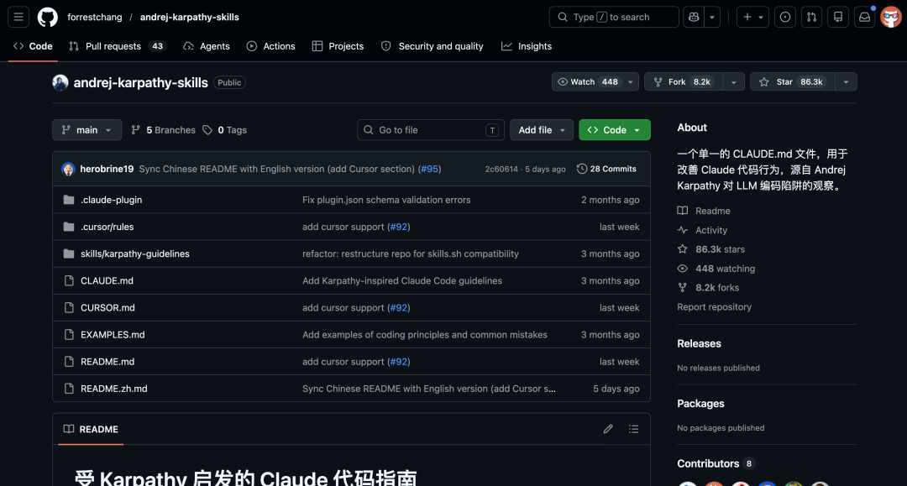
这个插件的核心就是四个原则：先想清楚再动手写代码、代码能少写就少写、只改必须改的地方、一切以目标为导向。
听起来简单，但实际用起来还挺有用的。
比如它会强制 AI 在写代码之前先显式声明自己的假设，有疑问的时候主动提问，而不是闷着头往错误方向跑。
再比如它会约束 AI 不要顺手去改旁边的代码或者删掉看起来没用的注释。
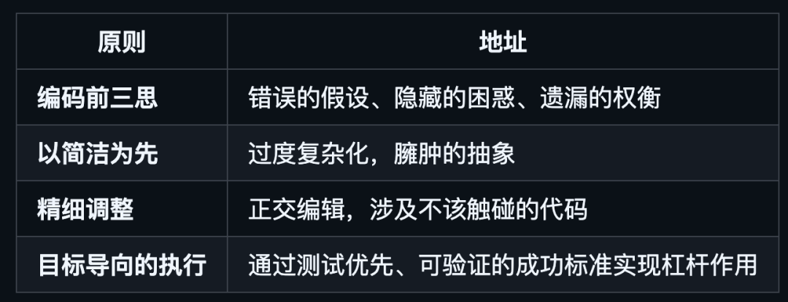
你把开源项目链接，丢个 Claude Code 让它自己安装就行了。
开源地址：https://github.com/forrestchang/andrej-karpathy-skills02
OpenAI 官方手的多 Agent 框架
OpenAI 自己开源的 Agent 框架，2.5 万 Star，更新非常勤快。
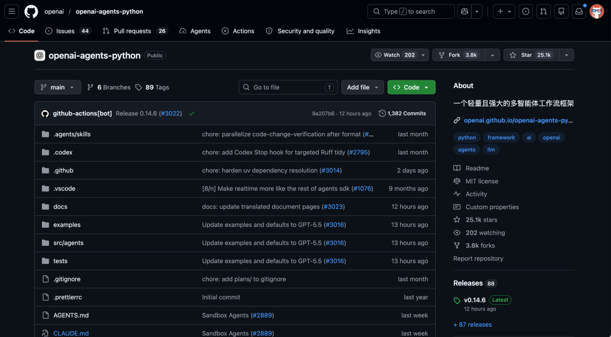
它主打轻量级和多 Agent 协作。
你可以定义多个 Agent，每个有不同的指令、工具和安全防护栏，Agent 之间可以互相 Handoff，也能把一个 Agent 当成另一个 Agent 的工具来用。
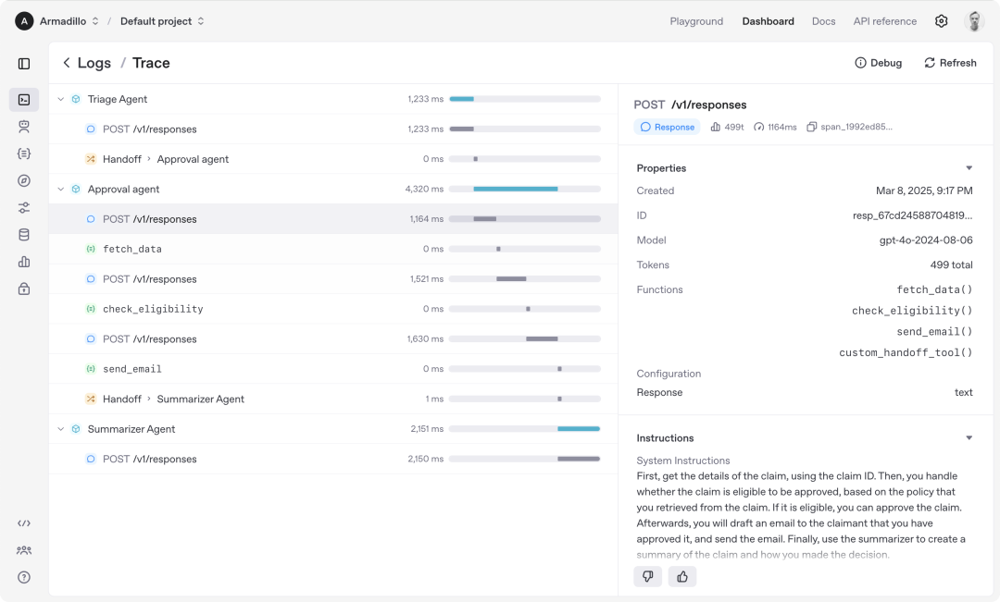
内置的功能挺全的。
Guardrails 做安全检查，Human-in-the-loop 做人机协作，Sessions 自动管理对话历史，Tracing 做全链路追踪调试。
最亮眼的是支持 Realtime Voice Agent，基于 gpt-realtime-1.5 构建语音 Agent。
虽然叫 OpenAI Agents SDK，但其实不绑定 OpenAI 的模型，支持 100 多个 LLM。
pip install openai-agents 一行就能装好。
开源地址：https://github.com/openai/openai-agents-python03
不花钱用 Claude Code
1 万 Star 的项目，做的事情很简单粗暴。
让你不花钱就能用 Claude Code。
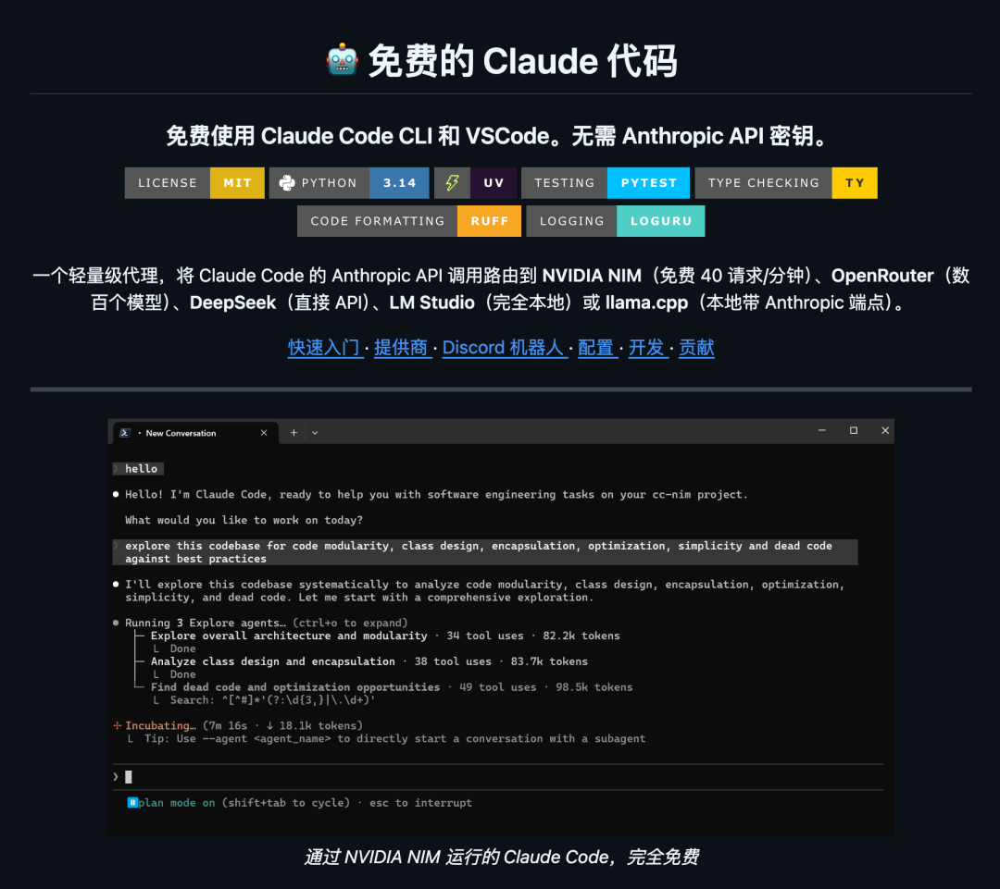
原理是一个轻量代理服务器，把 Claude Code 的 API 调用路由到 NVIDIA NIM、OpenRouter、DeepSeek、LM Studio、llama.cpp 这些免费或低成本的模型上。
你甚至可以给 Opus、Sonnet、Haiku 不同级别的请求指定不同的后端。
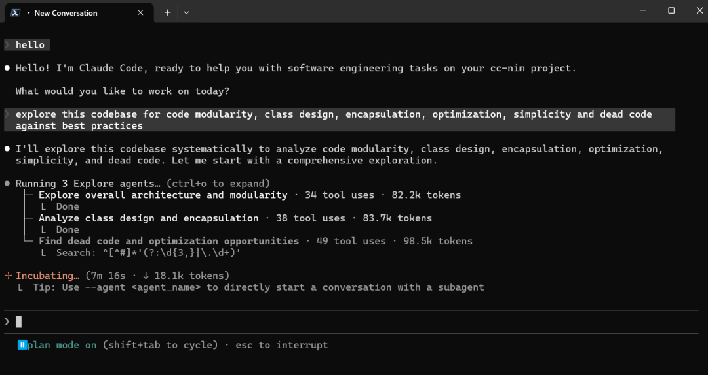
它还做了一些优化，比如配额探测、标题生成这些琐碎请求在本地直接拦截响应，省 API 配额和延迟。
另外还支持 Discord 和 Telegram 机器人，可以远程控制 Claude Code 编程。
启动也很简单，跑一个代理服务，然后设置环境变量指向本地代理就行了。
也支持 VS Code 和 IntelliJ 插件配置。
开源地址：https://github.com/Alishahryar1/free-claude-code04
让 AI Coding 会话从 30 分钟拉长到 3 小时
用 AI 编码工具的人都知道一个痛点：聊了半小时，上下文窗口就满了，压缩之后之前在干什么全忘了。
Context Mode 就是来解决这个问题的，接近 1 万 Star。
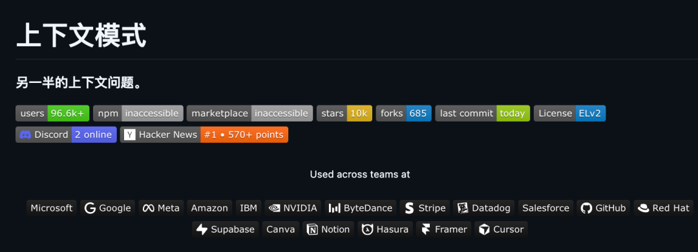
它通过沙箱化工具输出来压缩上下文。
比如一个 Playwright 快照本来 56KB，压缩后只有 299 字节；一个 GitHub Issue 页面 59KB 压缩到 1.1KB。整体压缩率大约 98%。
它用 SQLite 加 FTS5 加 BM25 搜索引擎追踪所有文件编辑、Git 操作、任务状态和用户决策。
即使对话被压缩了，模型也能从上次中断的地方继续干。
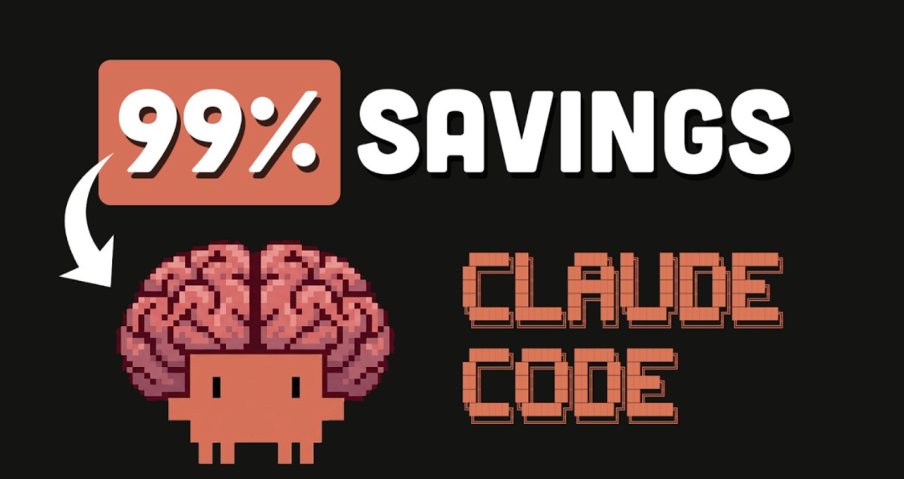
支持 Claude Code、Gemini CLI、VS Code Copilot、Cursor、OpenCode、Codex CLI 六个平台。
开源地址：https://github.com/mksglu/context-mode05
给你的代码库装上语义搜索
做 AI 辅助编码的时候，大项目的痛点是 AI 找不到相关代码，多轮搜索浪费时间还费 Token。
Claude Context 就是解决这个问题的 MCP 插件，9 千多 Star。
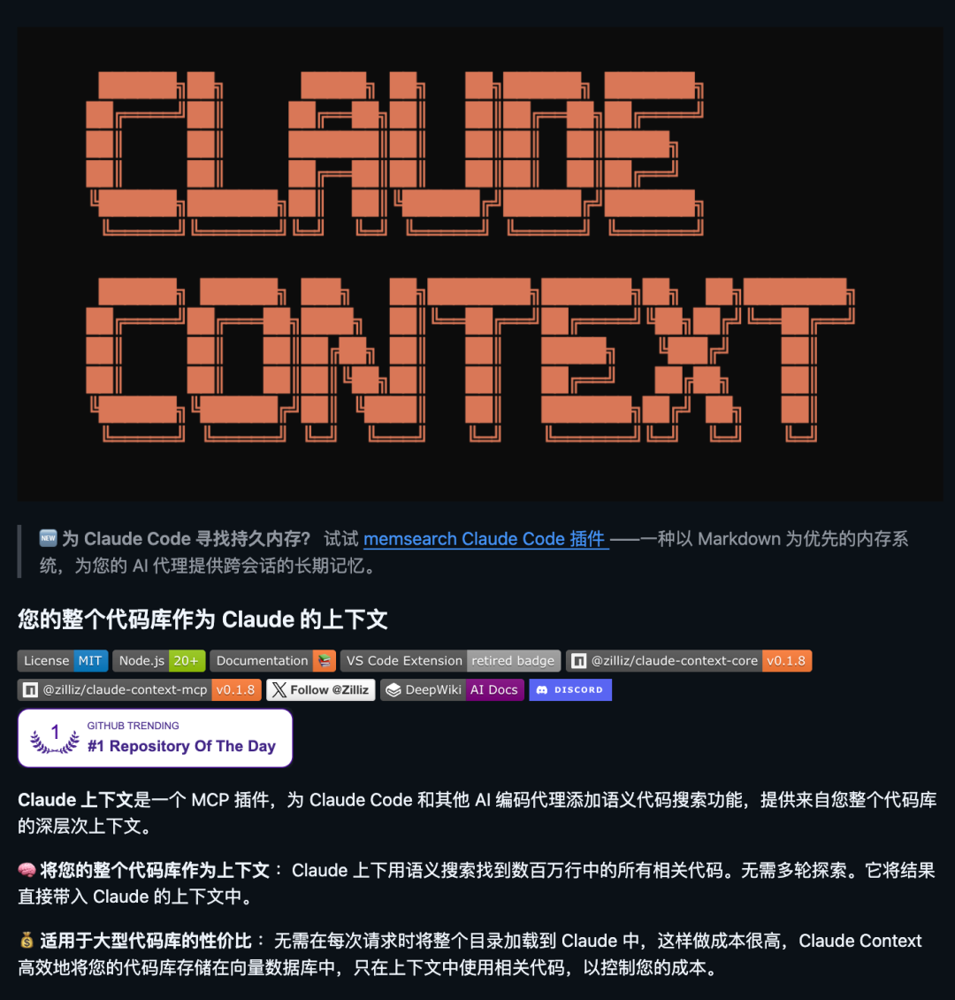
它用 BM25 加稠密向量的混合检索，你用自然语言说"找到处理用户认证的函数"就能直接定位到代码位置。
而且它做了增量索引，只重新索引变更的文件，不用每次都全量扫描。
实际测试能省大约 40% 的 Token 消耗，因为不用把整个目录都塞进上下文了。
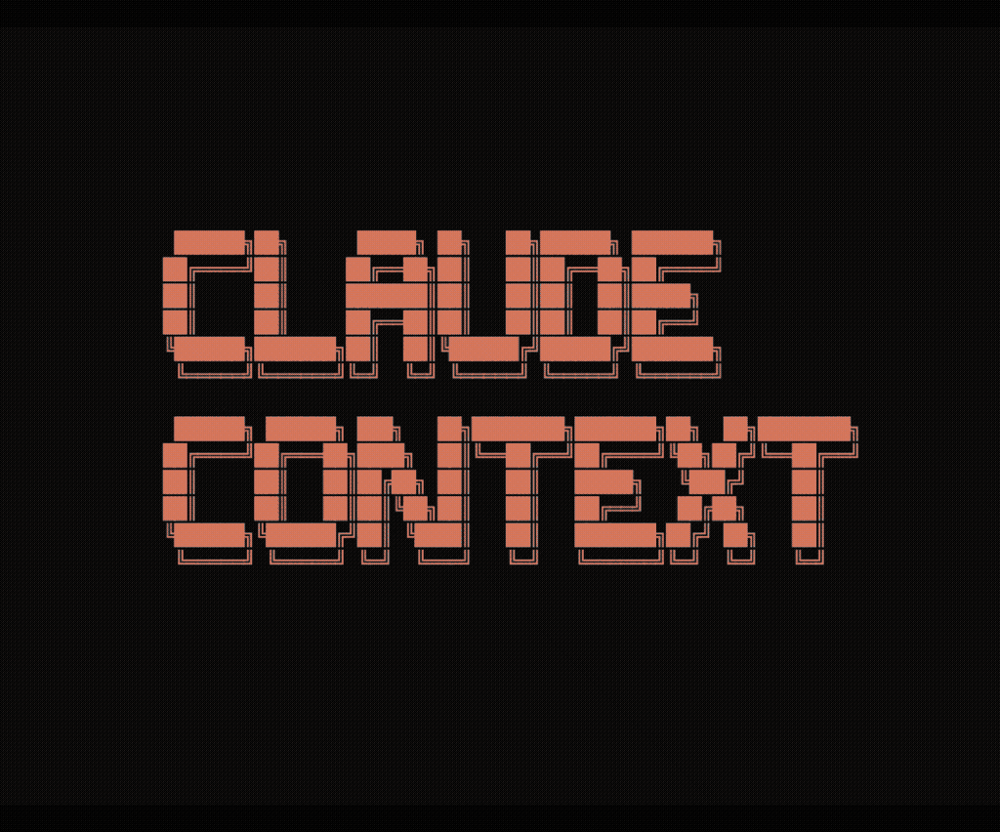
除了 Claude Code，它还支持 Cursor、VS Code、Windsurf、Cline、Gemini CLI 啥的。
开源地址：https://github.com/zilliztech/claude-context06
控制整台电脑
GenericAgent 的思路挺特别的，核心代码只有约 3000 行。
却能通过 9 个原子工具控制整台电脑：浏览器、终端、文件系统、键鼠输入、屏幕视觉、手机 ADB 都行，7000 Star。
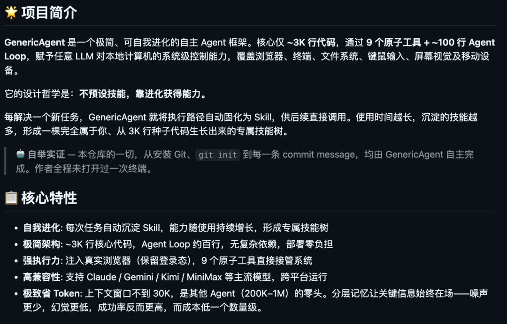
它也有一个自我进化机制，每完成一个新任务就自动沉淀成一个 Skill，用得越久技能树越丰富。
它还有一个五层记忆架构，上下文窗口不到 30K Token，比很多 Agent 的 200K 到 1M 省了一大截。
它的浏览器控制用的是真实浏览器而不是无头浏览器，能保留登录状态，这点很实用。
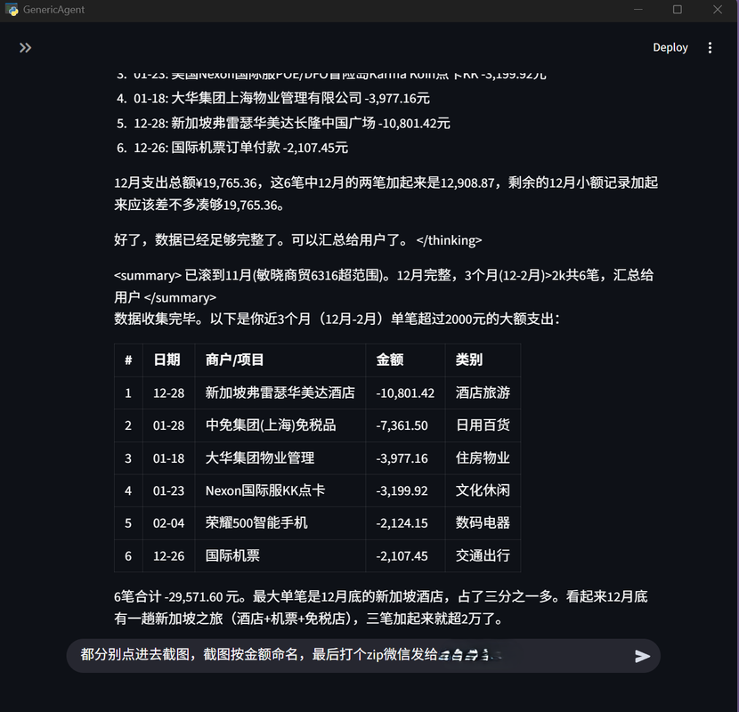
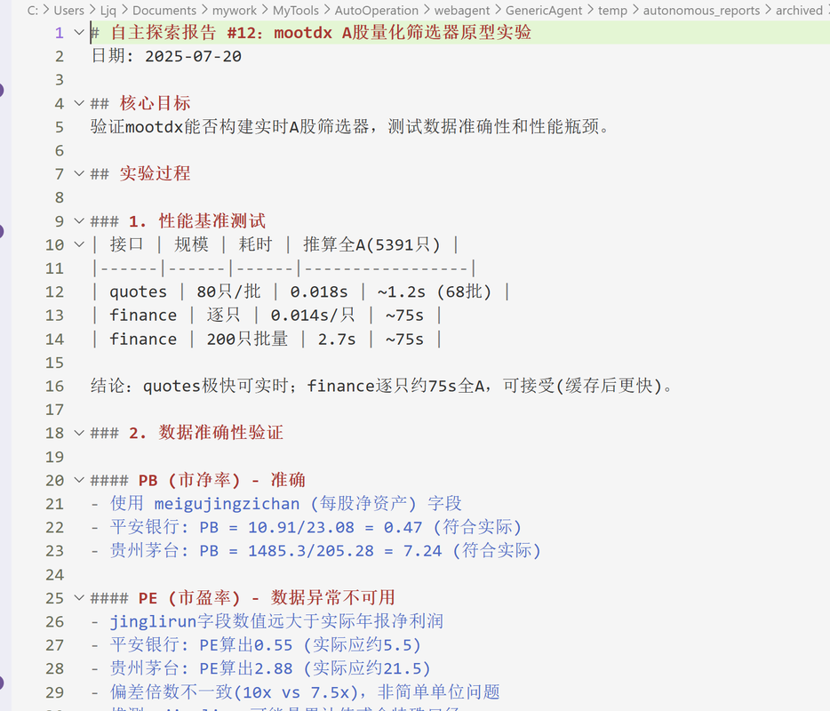
开源地址：https://github.com/lsdefine/GenericAgent07
开源 AI 聊天客户端
Thunderbird 团队搞了个 AI 聊天客户端叫 Thunderbolt，4000 Star。
基于 Tauri 框架，六端全覆盖：Web、Mac、Linux、Windows、Android、iOS。
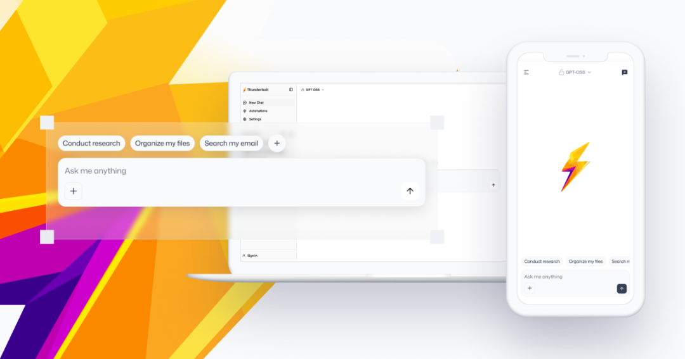
它的核心卖点是数据自控和模型自由。
你可以接前沿模型，也可以接 Ollama 跑本地模型，还能私有化部署，数据完全不外泄。
企业级功能也在做：OIDC 认证、端到端加密、跨设备云同步、Google 和 Microsoft 集成、MCP 支持。
提供 Docker Compose 和 Kubernetes 部署方案，每天发 Nightly 版本。
对于在意数据隐私或者需要私有化部署 AI 客户端的团队来说，这个值得关注。
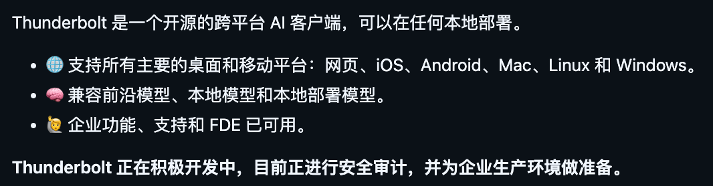
开源地址：https://github.com/thunderbird/thunderbolt08
让 AI 自动查故障根因
OpenSRE 是一个 AI SRE Agent 框架，做的事情是自动化生产事故调查和响应。
告警触发之后，它会自动去捞日志、指标、链路追踪这些上下文，做关联分析。
生成结构化的调查报告，包含根因分析和证据链，直接推送到 Slack 或者 PagerDuty。
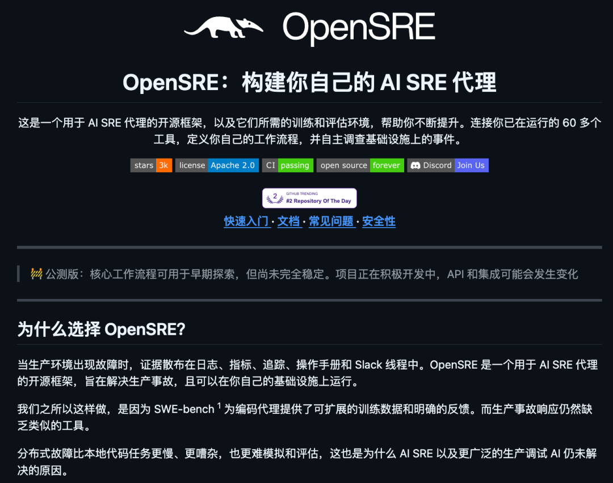
集成了 60 多个服务：Anthropic、OpenAI、Ollama 等 LLM 提供商，Grafana、Datadog、Honeycomb、CloudWatch、Sentry 等监控平台，K8s、AWS、GCP、Azure 等基础设施。
它还内置了 RCA 测试套件，能模拟合成事故来做评估，目标是成为 AI SRE 领域的 SWE-bench。
目前还是 Public Alpha 阶段。
开源地址：https://github.com/Tracer-Cloud/opensre09
AI 驱动的企业架构治理工具包
ArcKit 把企业架构治理从零散的文档变成了 AI 辅助的系统性工作流。
涵盖架构原则制定、利益相关者分析、风险管理、商业案例论证、需求文档生成、数据建模，连 GDPR 合规都考虑了。
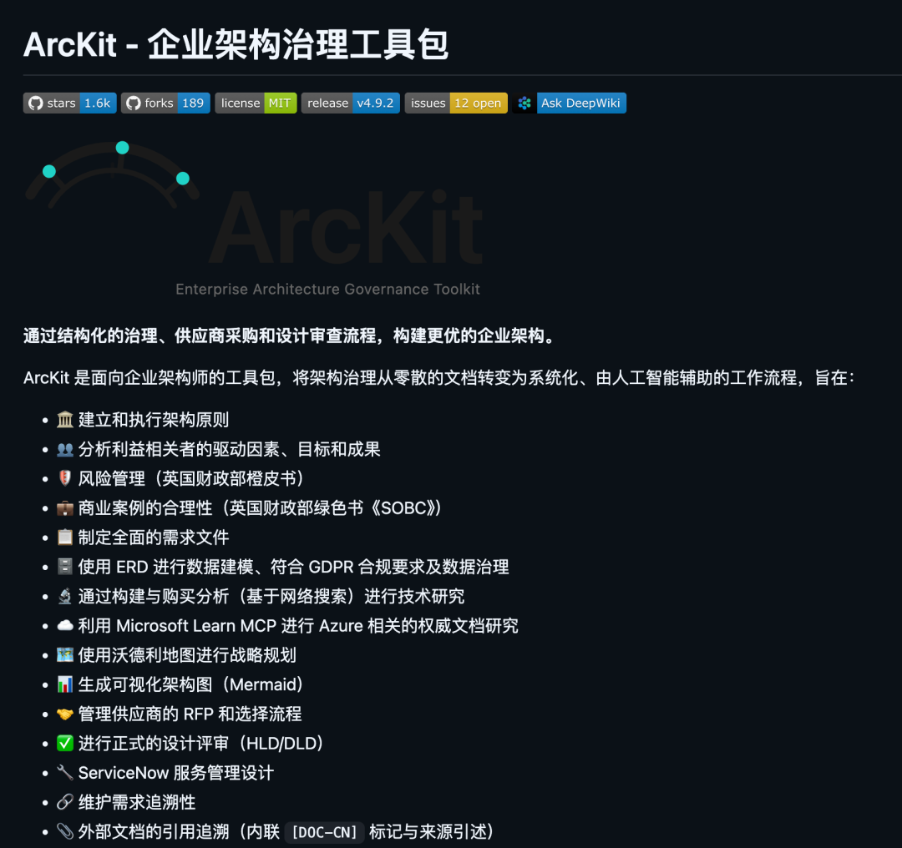
内置 68 个命令和 10 个自主研究 Agent，包括 Wardley Mapping 战略规划、供应商 RFP 管理、正式设计评审这些。
同时支持 Claude Code、Gemini CLI、GitHub Copilot、Codex CLI 多个 AI 平台。
开源地址：https://github.com/tractorjuice/arc-kit10
安全圈人人都该收藏的工具箱
做安全的朋友应该都听过这个项目，6.3 万 Star，基本上是安全工具界的瑞士军刀。
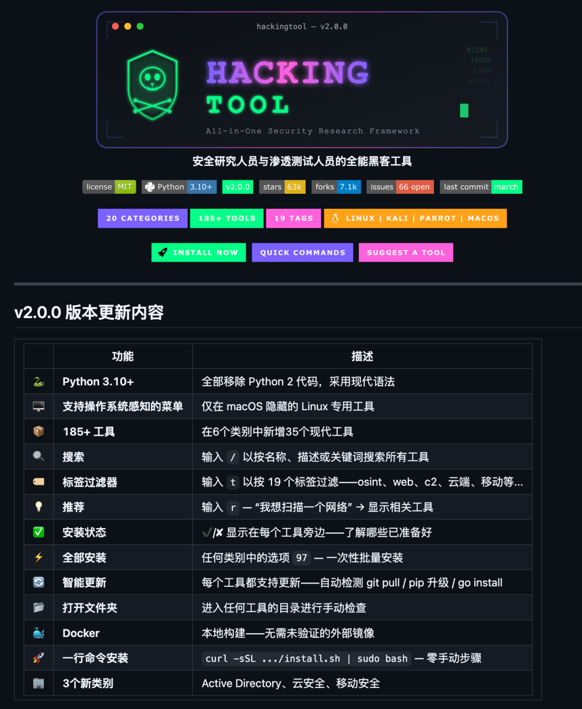
它集成了 185 个以上的安全工具，分成 20 个大类。
信息收集、SQL 注入、XSS、钓鱼攻击、无线攻击、后渗透、取证、逆向工程、云安全、移动安全等等，覆盖面非常广。
最近新增了 35 个工具和三个新分类：Active Directory、Cloud Security、Mobile Security。
还加了智能搜索功能。
输入关键词就能找到对应工具，甚至可以说"我想扫描网络"，它自动给你推荐。
安装也很方便，一行命令搞定，也支持 Docker 部署。每个分类里输入 97 就能批量安装该分类下所有工具。
开源地址：https://github.com/Z4nzu/hackingtool11
无审查的 AI 创意工作室
这个 8K Star 的项目定位很明确。
给创意工作者一个不受限制的 AI 图像和视频生成工具。
它集成了 200 多个模型，包括 Flux、Kling、Sora、Veo 这些主流的。
支持文生图、图生图、文生视频、图生视频和唇形同步，六个工作室各自分工。
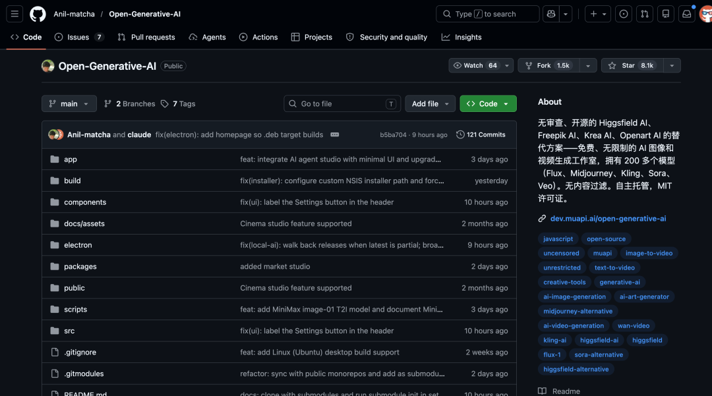
没有内容过滤器，没有 prompt 拒绝，想生成什么就生成什么。
也支持本地模型推理，有 Z-Image Turbo、Dreamshaper、SDXL 等选择。
部署方式也灵活，有 Web 版直接用，也能自己本地跑。
还提供 macOS、Windows、Linux 的桌面客户端，支持 Apple Silicon 的 Metal GPU 加速。
开源地址：https://github.com/Anil-matcha/Open-Generative-AI12
DeepSeek 出品的 GPU 内核性能怪兽
这个开源项目是专门做大模型的底层计算优化。
它是一个统一张量核心计算内核库，把 FP8、FP4、BF16 精度的矩阵乘法、MoE 融合、MQA 评分这些大模型关键计算原语都整合到一个 CUDA 代码库里。
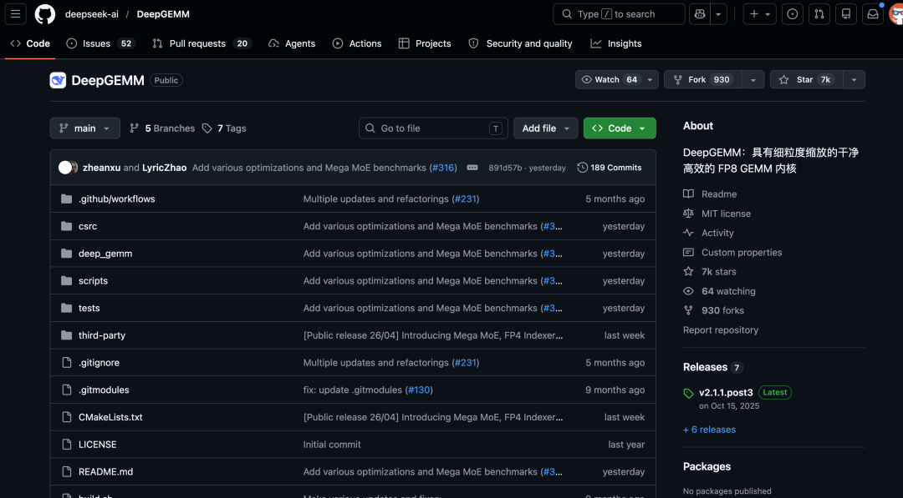
在 H800 GPU 上最高能达到 1550 TFLOPS，性能比专家手动调优的库还要好。
它的 Mega MoE 融合内核把 EP 分发、线性计算、SwiGLU 激活、EP 合并这些步骤合成一个 mega-kernel，通信和计算重叠执行，效率拉满。
安装简单，不需要编译 CUDA，JIT 在运行时自动编译。
需要 NVIDIA H100/H800/B200 这种 SM90 以上的 GPU。
开源地址：https://github.com/deepseek-ai/DeepGEMM13
丢个 APK 就给你扒干净
这个 Claude Code 的插件专门做 Android 逆向，接近 5000 Star，在安全研究社区挺火的。
丢一个 APK、XAPK、JAR 或者 AAR 文件进去，它用 jadx 和 Fernflower 双引擎反编译。
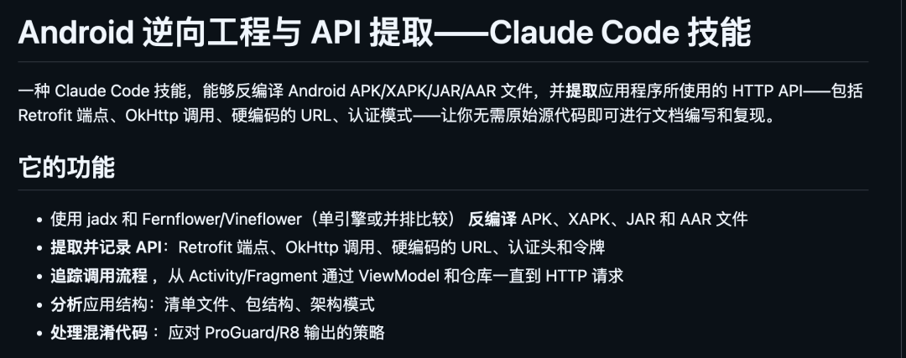
自动识别和文档化里面的 Retrofit 端点、OkHttp 调用、硬编码 URL、认证模式和 Token。
它还能做调用链追踪，从 Activities 和 Fragments 一路追踪到 ViewModels、Repositories 再到 HTTP 调用层。
ProGuard 和 R8 混淆过的代码也能分析。
对于没有源码需要快速了解一个 App 的网络接口这种场景，确实很方便。安装需要 Java JDK 17 以上和 jadx CLI。
开源地址：https://github.com/SimoneAvogadro/android-reverse-engineering-skill14
点击下方卡片，关注逛逛 GitHub
这个公众号历史发布过很多有趣的开源项目，如果你懒得翻文章一个个找，你直接关注微信公众号：逛逛 GitHub ，后台对话聊天就行了：